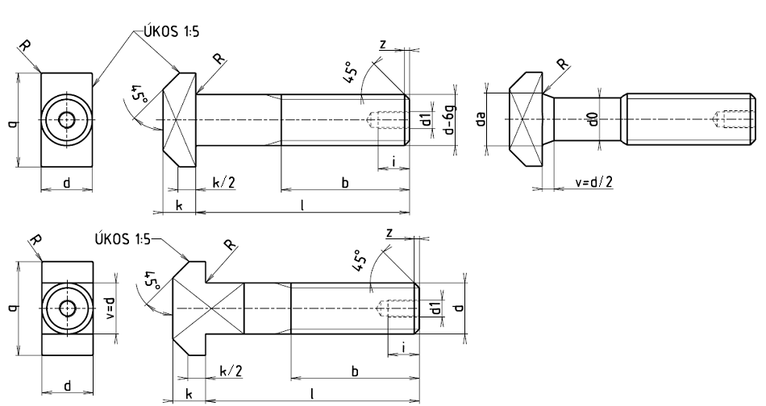

Příklad označení šroubu s hlavou T se závitem M10:
ŠROUB M10×60 ČSN 02 1341
Příklad označení šroubu s hlavou T se závitem M10, délky l=60 mm, třídy pevnosti 4.4
ŠROUB M10×60 ČSN 02 1343
| l | 30 | (35) | 40 | (45) | 50 | (55) | 60 | (65) | 70 | (75) |
|---|---|---|---|---|---|---|---|---|---|---|
| l | 80 | 90 | 100 | (110) | 120 | (130) | 140 | (150) | 160 | (170) |
| l | 180 | (190) | 200 | 220 | 240 | 260 | 280 | 300 | 320 | 340 |
| l | 360 | 380 | 400 | 420 | 440 | 460 | 480 | 500 | 540 | 680 |
| l | 630 | (710) | 800 | (900) | 1000 | (1100) | 1200 | (1400) | 1600 | (1800) |
| l | 2000 | (2200) | 2500 | 2800 | 3000 | 3500 | 4000 | 4500 | 5000 |
| Závit d |
Délka závitu b pro šrouby délky l |
d1 | d0 | i | k | q | R | Rozsah délek l | ||
|---|---|---|---|---|---|---|---|---|---|---|
| do 150 | přes 150 | ČSN 02 1341 | ČSN 02 1343 | |||||||
| M6 | 16 | 4,5 | 16 | 0,3 | 30 až 50 | |||||
| M8 | 22 | 4,5 | 18 | 0,5 | 35 až 70 | |||||
| M10 | 26 | 7 | 21 | 0,5 | 35 až 140 | 35 až 120 | ||||
| M12 | 30 | 8 | 26 | 1,0 | 45 až 400 | 45 až 150 | ||||
| M16 | 38 | 44 | 10,5 | 30 | 1,2 | 50 až 400 | 50 až 180 | |||
| M20 | 46 | 52 | 13 | 36 | 1,2 | 60 až 1800 | 60 až 180 | |||
| M24 | 54 | 60 | 15 | 43 | 1,6 | 70 až 2000 | 75 až 788 | |||
| M30 | 66 | 72 | 19 | 54 | 1,6 | 100 až 2000 | 100 až 220 | |||
| M36×3 | 78 | 84 | M12 | 22 | 23 | 66 | 1,8 | 150 až 2500 | 120 až 240 | |
| M42×3 | 90 | 96 | M12 | 35 | 22 | 26 | 80 | 1,8 | 150 až 2500 | 150 až 300 |
| M48×3 | 102 | 108 | M12 | 38 | 22 | 30 | 88 | 2,0 | 180 až 3500 | 180 až 340 |
| M56×4 | 124 | M16 | 45 | 26 | 35 | 102 | 2,0 | 480 až 3500 | 250 až 400 | |
| M64×4 | 140 | M16 | 50 | 26 | 40 | 115 | 2,0 | 500 až 4000 | 280 až 400 | |
| M64×4 | 140 | M16 | 50 | 26 | 40 | 115 | 2,0 | 500 až 4000 | 280 až 400 | |
| M72×4 | 156 | M16 | 60 | 26 | 45 | 128 | 2 | 540 až 4000 | 300 až 400 | |
| M80×4 | 172 | M20 | 70 | 33 | 50 | 140 | 2 | 580 až 5000 | 320 až 400 | |
| M90×4 | 192 | M20 | 80 | 33 | 55 | 155 | 3 | 710 až 5000 | ||
| M100×4 | 212 | M20 | 90 | 33 | 62 | 170 | 3 | 800 až 5000 | ||
| Závit d |
Gh+z[g] | G1[g/mm] | ||||
|---|---|---|---|---|---|---|
| ČSN 02 1341 | ČSN 02 1343 | ČSN 02 1341 | ČSN 02 1343 | |||
| l≤150 | l>150 | l≤150 | l>150 | |||
| M6 | 6,25 | 0,2219 | ||||
| M8 | 13,34 | 0,3946 | ||||
| M10 | 23,63 | 24,82 | 0,6165 | |||
| M12 | 39,91 | 44,28 | 41,85 | 46,22 | 0,8878 | |
| M16 | 87,05 | 95,04 | 91,62 | 99,62 | 1,5783 | |
| M20 | 162,6 | 175,1 | 171,4 | 183,9 | 2,4662 | |
| M24 | 272,8 | 290,8 | 287,3 | 305,3 | 3,5512 | |
| M30 | 533,2 | 561,6 | 562,0 | 590,4 | 5,5488 | |
| M36×3 | 933,2 | 976,1 | 983,4 | 1026 | 7,9903 | |
| M42×3 | 1539 | 1581 | 1641 | 1026 | 7,5525 | 10,876 |
| M48×3 | 2370 | 2422 | 8,9028 | 14,205 | ||
| M56×4 | 3676 | 3765 | 12,4848 | 19,335 | ||
| M64×4 | 5487 | 5606 | 15,4134 | 19,5253 | ||
| M72×4 | 7743 | 7960 | 22,1953 | 31,961 | ||
| M80×4 | 10350 | 10703 | 30,2103 | 39,458 | ||
| M90×4 | 14575 | 39,4584 | ||||
| M100×4 | 20020 | 49,9395 | ||||
| Hmotnost šroubu G v gramech se vypočítá ze vztahu G=Gh+z+G1(l−b) | ||||||